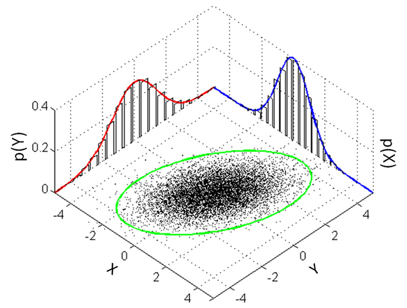
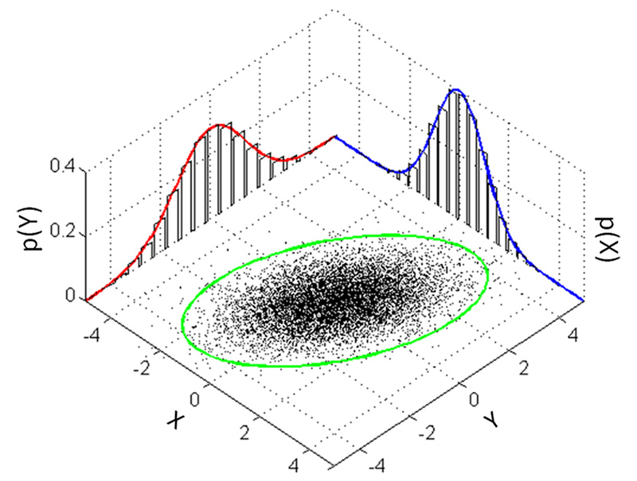
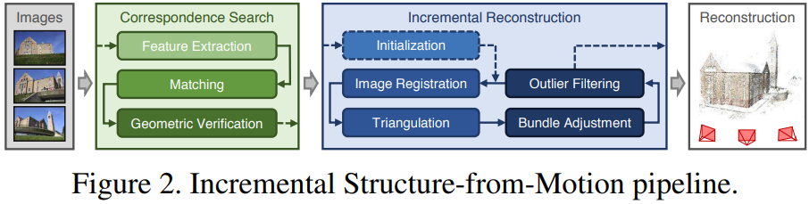
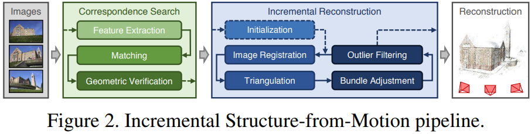
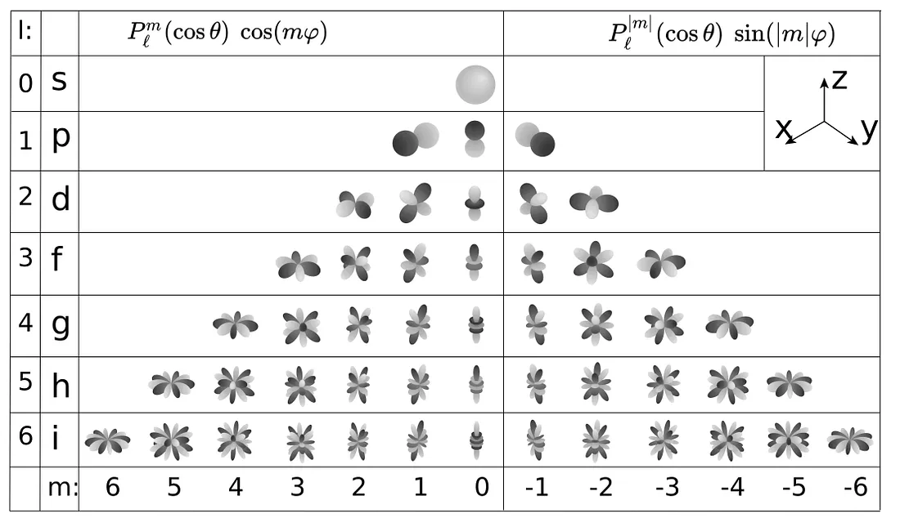
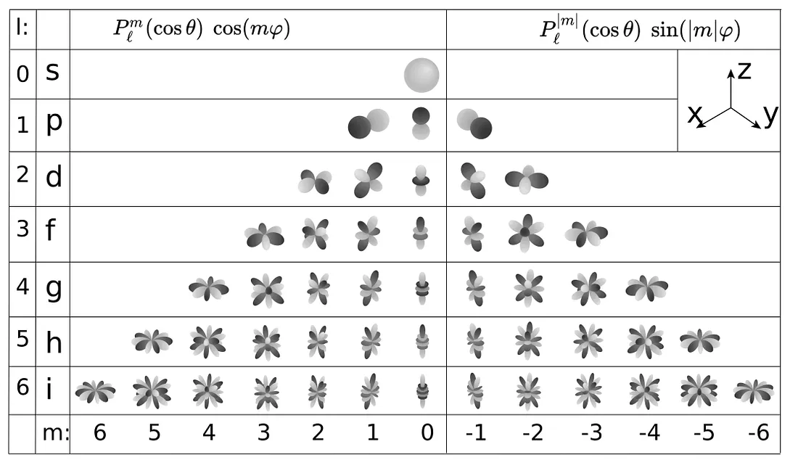

3D Guassian Splatting
 上图为整个系统的示意图，系统首先对SfM点云进行初始化，得到3D高斯，然后借助相机外参将点投影到图像平面上（即Splatting），接着用可微光栅化，渲染得到图像。得到渲染图像Image后，将其与Ground Truth图像比较求loss，并沿蓝色箭头反向传播。蓝色箭头向上，更新3D高斯中的参数，向下送入自适应密度控制中，更新点云。
上图为整个系统的示意图，系统首先对SfM点云进行初始化，得到3D高斯，然后借助相机外参将点投影到图像平面上（即Splatting），接着用可微光栅化，渲染得到图像。得到渲染图像Image后，将其与Ground Truth图像比较求loss，并沿蓝色箭头反向传播。蓝色箭头向上，更新3D高斯中的参数，向下送入自适应密度控制中，更新点云。
什么是3D高斯点染
每个高斯图像可由以下参数来描述:
位置: 所在位置 (XYZ)
协方差: 缩放程度 (3x3 矩阵)
颜色: 颜色 (RGB)
Alpha: 透明度 (α)
3DGS是一个非常厉害的技术，为了先有一个笼统的认知，我们可以简单将其概括为如下几步：
录一段视频或者拍一组不同角度的照片，用一些技术（例如SfM）估计点云。或者直接随机初始化一组点云。
点云中的每一个点，代表着一个三维的高斯分布，所以除了点的位置（均值）以外，还有协方差，以及不透明度，以及颜色（球谐系数）。直观可以理解为一个”椭球体“。
将这些椭球体沿着特定的角度投影到对应位姿所在的投影平面上，这一步也叫“splatting“，一个椭球体投影到平面上会得到一个椭圆（代码实现时其实是以长轴为直径的圆），然后通过计算待求解像素和椭圆中心的距离，我们可以得到不透明度（离的越近，说明越不透明）。每个椭球体又各自代表自己的颜色，这是距离无关的。于是就可以进行alpha compositing，来合成颜色。然后快速的对所有像素做这样的计算，这被称作”快速可微光栅化“。
于是可以得到整个图片，再和ground truth比较，得到损失，然后梯度反传，随机梯度下降，进行优化。

SFM
https://colmap.github.io/index.html https://github.com/colmap/colmap
3D Gaussian
- Gaussian
1D 高斯
 3D 高斯

3D 高斯
- 各向异性（anisotropic）
指的是从各个方向上看过去，物体的外观表现都不同。
- 抛雪球（splatting）
一种计算机图形学中用三维点进行渲染的方法，该方法将三维点视作雪球往图像平面上抛，雪球在图像平面上会留下扩散痕迹，这些点的扩散痕迹叠加在一起就构成了最后的图像，是一种针对点云的渲染方法。
- Structure-from-Motion（SfM）
COLMAP stands for “Structure from Motion” (SfM), which is an algorithm used to reconstruct the 3D structure of objects and camera poses from multi-view images of the same object taken from different angles.
 Incremental Structure-from-Motion pipline

https://demuc.de/papers/schoenberger2016sfm.pdf
Incremental Structure-from-Motion pipline

https://demuc.de/papers/schoenberger2016sfm.pdf- 协方差
协方差（covariance）是两个变量的相关性度量，可以用来描述两个变量是否存在线性关系。方差是用来度量单个随机变量的离散程度，而协方差则一般用来刻画两个随机变量的相似程度，其中，方差的计算公式为 其中，n 表示样本量，符号 \bar{x} 表示观测样本的均值，这个定义在初中阶段就已经开始接触了。 在此基础上，协方差的计算公式被定义为
- 球谐函数(Spherical Harmonics)
在机器学习中，球谐函数可以用来表示球面上的特征，可以用于训练机器学习模型。协方差可以用来描述两个特征之间的相关性，可以用于选择特征、评估模型等

 当SH的系数用的越多，那么表达能力就越强，跟原始的函数就越接近
当SH的系数用的越多，那么表达能力就越强，跟原始的函数就越接近
 

Repo
Installation
Cuda Download Visual Studio 2019 with Desktop C++ Anconda
conda env list
conda info --envs
conda config --show channels
conda config --add channels pytorch
conda config --add channels nvidia
conda config --add channels conda-forge
conda remove -n gaussian_splatting --all
SET DISTUTILS_USE_SDK=1 # Windows only
conda create --name gaussian_splatting python=3.11.5
conda activate gaussian_splatting
conda install pip=22.3.1
conda install tqdm
conda install plyfile=0.8.1
pip install torch-2.0.0+cu118-cp311-cp311-win_amd64.whl
pip install torchaudio-2.0.1+cu118-cp311-cp311-win_amd64.whl
pip install torchvision-0.15.1+cu118-cp311-cp311-win_amd64.whl
pip install ninja
pip install .\submodules\diff-gaussian-rasterization\
conda deactivate
Prepare Images
ffmpeg -i {video} -vf fps={fps} %05d.jpg
python.exe .\convert.py -s .\datasets\truck\ –colmap_executable .\tool\COLMAP-3.8-windows-cuda\COLMAP.bat
python.exe .\train.py -s .\datasets\truck\ -m .\datasets\trained-model\
python.exe .\train.py -s .\datasets\truck\ -m .\datasets\trained-model\ –data_device cpu –debug_from 0 –densify_from_iter 0 –densification_interal 1
Reference
FAQ
python -m pip uninstall pip==20.0.2
git submodule update –init –recursive
git submodule update –init –recursive –force